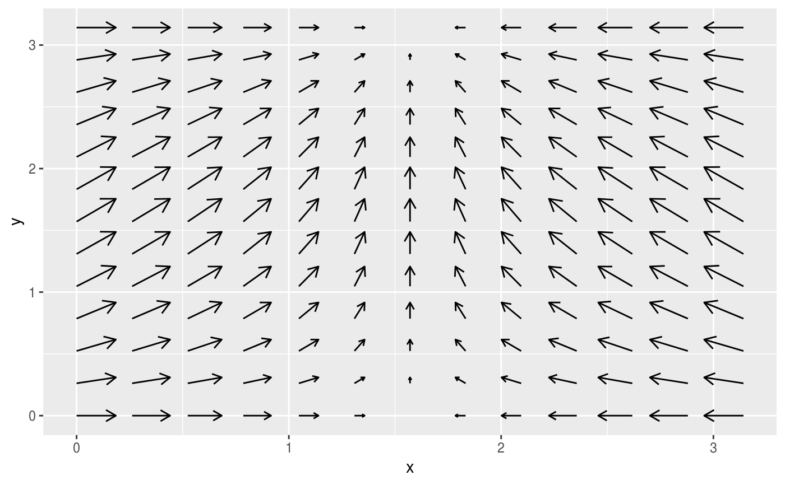
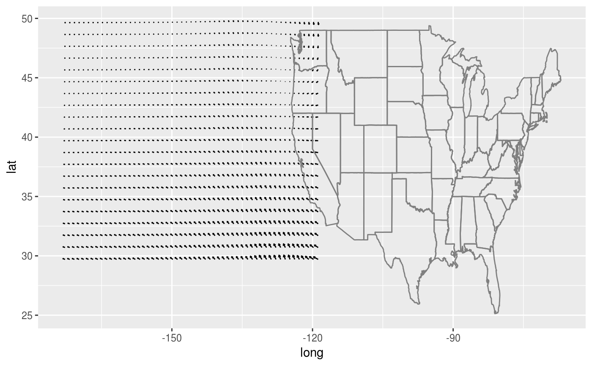

Displays the direction and length of vectors on a graph.
geom_quiver(mapping = NULL, data = NULL, stat = "quiver", position = "identity", center = FALSE, rescale = FALSE, vecsize = NULL, na.rm = FALSE, show.legend = NA, inherit.aes = TRUE, ...) GeomQuiver stat_quiver(mapping = NULL, data = NULL, geom = "quiver", position = "identity", center = FALSE, rescale = FALSE, vecsize = NULL, na.rm = FALSE, show.legend = NA, inherit.aes = TRUE, ...) StatQuiver
| mapping | Set of aesthetic mappings created by |
|---|---|
| data | The data to be displayed in this layer. There are three options: If A A |
| stat | The statistical transformation to use on the data for this layer, as a string. |
| position | Position adjustment, either as a string, or the result of a call to a position adjustment function. |
| center | If |
| rescale | If |
| vecsize | By default (NULL), vectors sizing is automatically determined. If a grid can be identified, they will be scaled to the grid, if not, the vectors will not be scaled. By specifying a numeric input here, the length of all arrows can be adjusted. Setting vecsize to zero will prevent scaling the arrows. |
| na.rm | If |
| show.legend | logical. Should this layer be included in the legends?
|
| inherit.aes | If |
| ... | other arguments passed on to |
| geom | The geometric object to use display the data |
An object of class GeomQuiver (inherits from GeomSegment, Geom, ggproto) of length 2.
centered x start position for velocity arrow
centered y start position for velocity arrow
centered x end position for velocity arrow
centered y end position for velocity arrow
# Quiver plots of mathematical functions expand.grid(x=seq(0,pi,pi/12), y=seq(0,pi,pi/12)) %>% ggplot(aes(x=x,y=y,u=cos(x),v=sin(y))) + geom_quiver()# Removing automatic scaling ggplot(seals, aes(x=long, y=lat, u=delta_long, v=delta_lat)) + geom_quiver(vecsize=NULL) + borders("state")# NOT RUN { # Centering arrows is useful for plotting on maps. library(dplyr) library(ggmap) wind_data <- wind %>% filter(between(lon, -96, -93) & between(lat, 28.7, 30)) qmplot(lon, lat, data=wind_data, extent="panel", geom = "blank", zoom=8, maptype = "toner-lite") + geom_quiver(aes(u=delta_lon, v=delta_lat, colour = spd), center=TRUE) # }